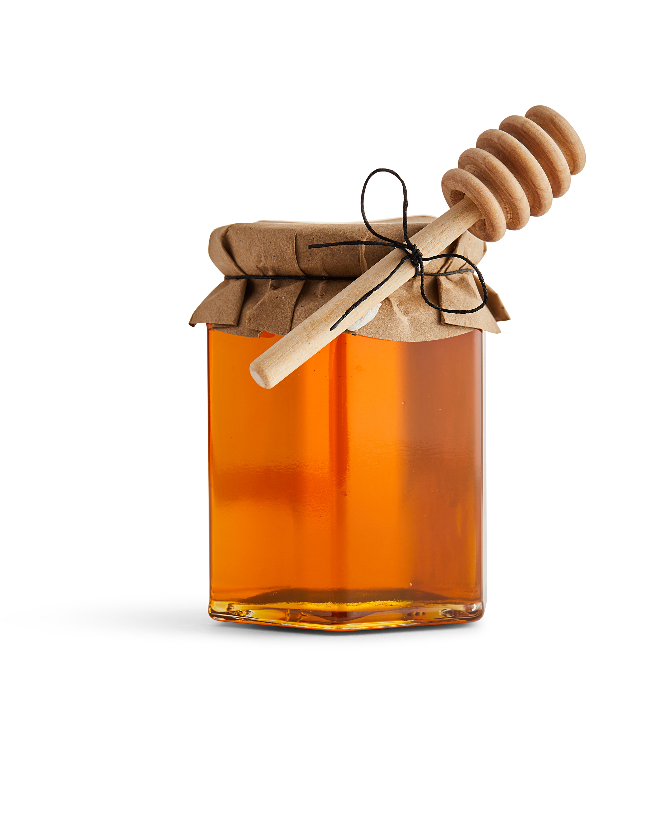

Beekeeping: how to do it, products and much more
(YOU NAME IT, WE GOT IT)
Beekeeping (or apiculture) is the maintenance of bee colonies, commonly
in man-made hives, by humans. Most such bees are honey bees in the genus
Apis, but other honey-producing bees such as Melipona stingless bees are
also kept. A beekeeper (or apiarist) keeps bees in order to collect
their honey and other products that the hive produce (including beeswax,
propolis, flower pollen, bee pollen, and royal jelly), to pollinate
crops, or to produce bees for sale to other beekeepers. A location where
bees are kept is called an apiary or "bee yard".
Some of our products


Top Rated
Top Rated
Mountain Honey Produced in the mountains of Kozjak (#1) 15$
Classcal Honey Honey made from Sunflowers (#2) 10$
Propolis A resinous mixture that honey bees produce by mixing saliva and beeswax with exudate. 20$